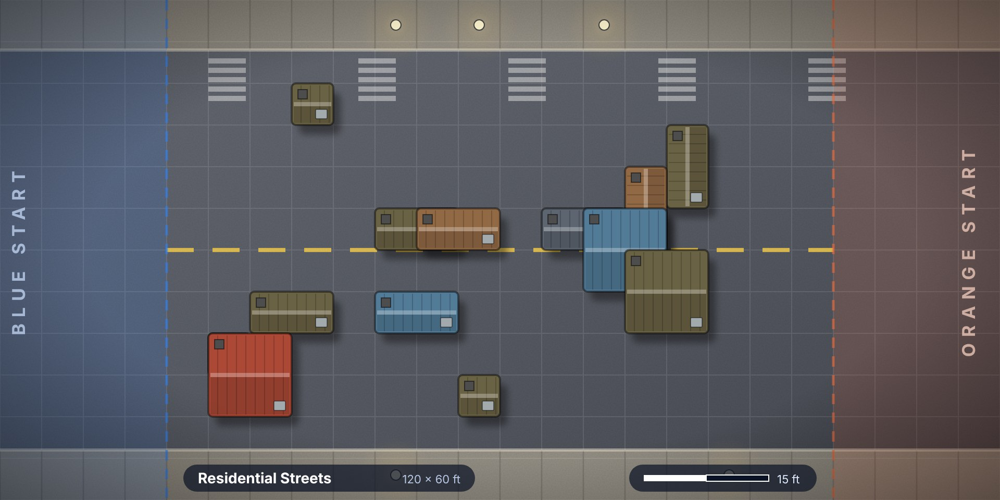
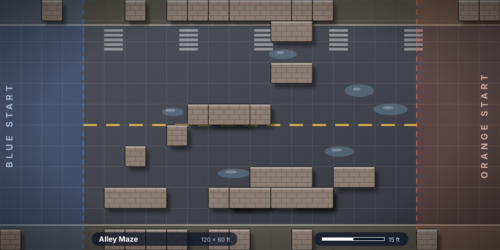
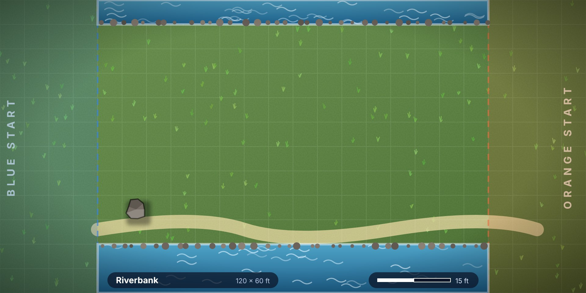
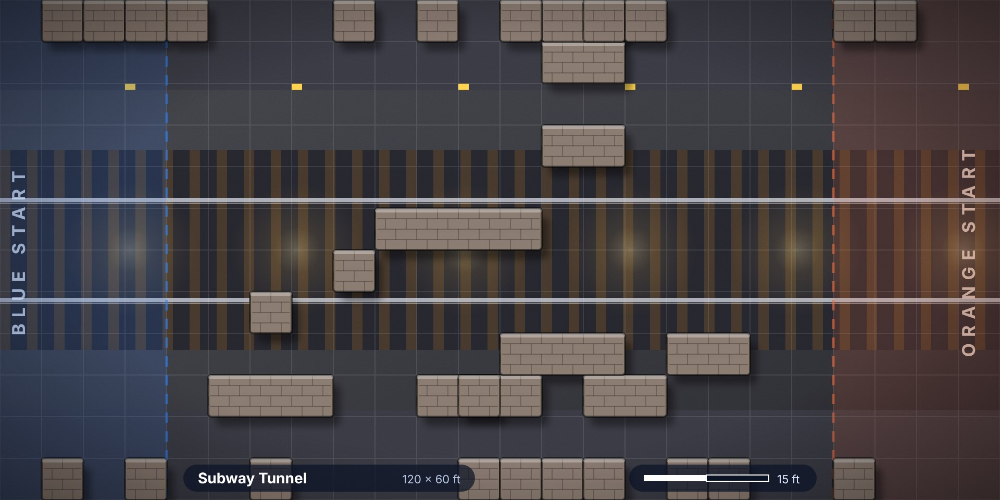
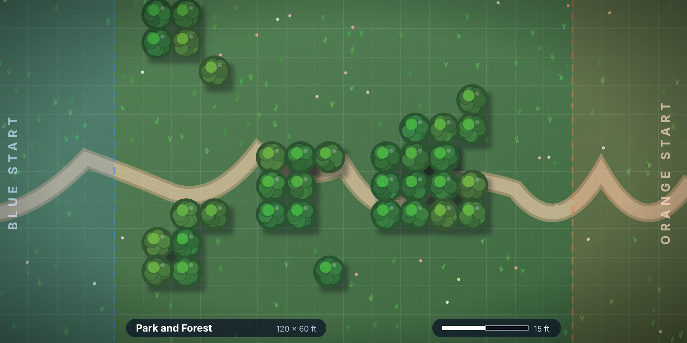
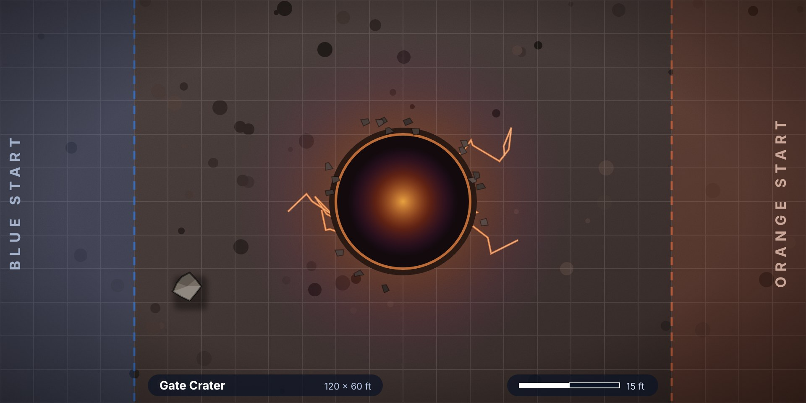
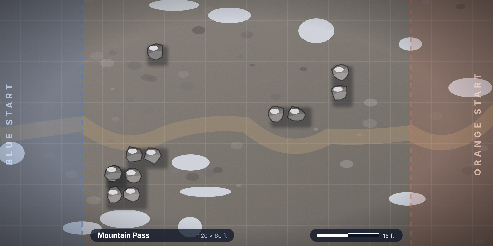

World Trigger Tabletop RPG
A d20 role-playing game of Border agents, Trion bodies and Neighbor invasions, built for teams of three. Wounds and Trion are one pool, every agent can bail out, and nobody dies.
- d20 + d6 / d4
- 3 players + an Operator (game master)
- 9 classes, Levels 1 to 10
- Version: 18 Nov 2026
All numbers are first drafts and have not been played at a table yet. Balance was only checked with a simple computer simulation. Tell us what feels wrong.
New player? Do these three things
Try a fight
Paste your agent in and fight on a battle map. Enemies have fixed stats and each Boss has a recommended Level.
Open the fight simulatorThis page is always the newest version. Bookmark it, and the links never change.
Quick start
1. Your turn
Move up to 30 ft. Take one action, usually an attack. One free action. One reaction per round to Block an attack.
2. Did you hit?
Roll d20 + stat + Level Bonus + weapon bonus. Equal to or above the target's Evade (10 + DEX + Level Bonus) is a hit. Ranged attacks cost 1 Trion; melee is free.
3. What happened?
Roll a d6 for the body part (1 right leg, 2 left leg, 3 right arm, 4 left arm, 5 chest, 6 weapon). Roll a d6 for severity and add the weapon's Lethal. Seven or more counts as 7. Wounds cost Trion.
4. Bailing out
You bail out at 0 Trion, when your head or chest is destroyed, or if you are hit while Nearly Dead (two limbs destroyed). Nobody dies.
Making an agent takes about ten minutes. Stats start at 0: add +3, +2, +1, +1 and -1. Pick a special ability (three for every stat); it needs +3 in its stat, so your +3 decides which abilities you can take. Max Trion is 40 + 5 x TRION + 2 x STA + your class's Trion per Level above 1, minus 2 for each weapon and 1 for each sub trigger you carry. The character creator does the maths. If you are unsure of a rule, the Operator decides and the game keeps moving.
The books
Players Handbook
Start here. Character creation, classes, 18 special abilities, weapons, triggers and the combat rules, with sample characters.
Download PDFOperator Guide
For the person running the game. Full rules, the setting, three ready-to-run missions and balance notes.
Download PDFMonster Manual
Trion soldiers, Neighbors, Aftokrator bosses and Black Trigger enemies, with stats and tactics.
Download PDFCharacter creator
Works in any browser, with no account and nothing to install. Pick a class, Level, stats, weapons and triggers from the dropdowns. Trion, Evade, attack bonuses and wound limits are worked out for you. Your character is saved in your browser. Press Copy character code to paste your agent into Border Table Online or the fight simulator.
The offline version is one file. Save it, then open it in any browser. No internet needed, and it remembers your sheet.
Play online: Border Table
A shared tabletop for playing together over the internet. Everyone opens the same link and sees the same map, tokens, dice rolls and chat live. Paste in the character code from the creator to make a sheet, put it on the map as a token, and roll attacks and severity with Edge and Snag. Open it on a laptop, tablet or phone. No account needed: the Operator opens a table and shares a room code, and players join with their name and a personal code the table gives them (random, so nobody has a password to reuse), and their characters are saved on their own device so they can take them to any table. The Operator keeps the page open while playing.
Fight simulator
Paste in the character code from the creator and your own agent fights, with enemies scaled to your Level. Or pick two teams of three, or a team and an enemy group, then choose a map. Watch the fighters move, take cover and fight round by round, or run 1,000 fights to see win rates. It includes the Aftokrator and Black Trigger bosses. It models class features, special abilities and sub triggers (some simplified, listed on the page), so use it as a balance check, not a prediction.
Battle maps
18 original illustrated maps, 120 × 60 ft on a 5 ft grid. Open one to save the full-size image for Discord or a virtual tabletop. The fight simulator uses the same maps. Water and the crater block movement.
















Send feedback
Fill in what you can. The form builds a message you copy and paste into Discord or send to whoever shared this page. Nothing is sent from here.